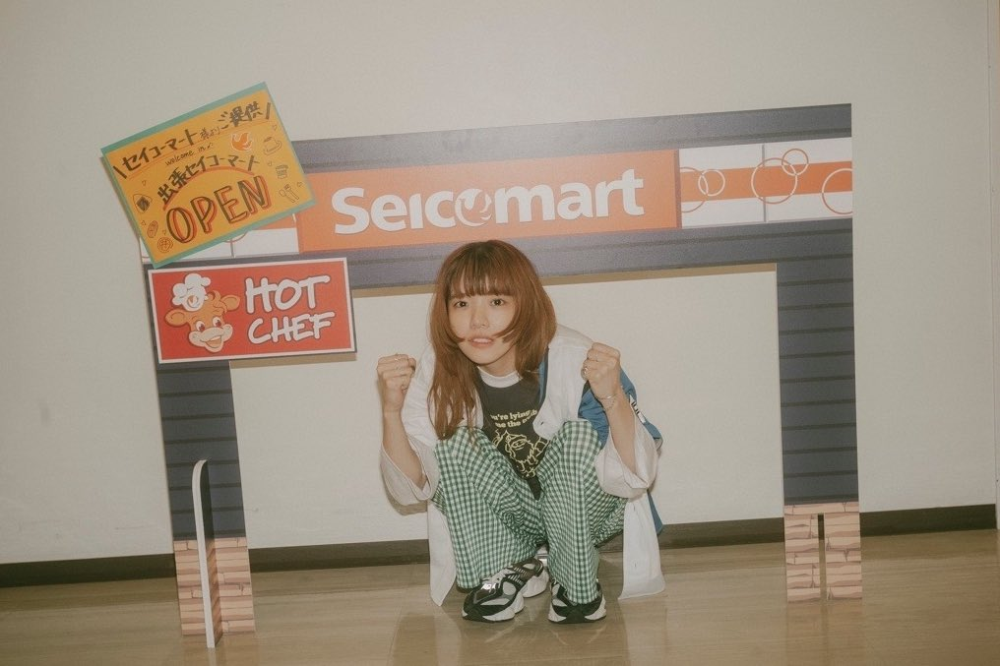

플레이리스트
あいみょん
2곡, 9분 24초
#
제목
앨범
추가한 날짜
1
 바람의 속삭임아이묭
바람의 속삭임아이묭
청춘의 익사이트먼트
2024년 1월 6일
3:54
1
 GOOD NIGHT BABY아이묭
GOOD NIGHT BABY아이묭
순간적 식스센스
2024년 1월 6일
5:30
이대로 아침이 오지 않으면 좋을 텐데
코노마마 아사가 코나케랴 이이노니
このまま朝が来なけりゃいいのに
새카만 이불 안에서 몸을 웅크리고우즈쿠맛테루 맛쿠라나 후톤노 나카데うずくまってる真っ暗な布団の中で
또 그 녀석과 그 녀석을 흠씬 때려 주었어
마타 아이츠토 아이츠오 분나굿테얏타
またあいつとあいつをぶん殴ってやった
그래도 변함없는 생활에
소레데모 카와라나이 세이카츠니
それでも変わらない生活に
평생의 소원이라도 이뤘다면
잇쇼노 오네가이토카 츠카에타나라
一生のお願いとか使えたなら
이 앞은 나 아닌 누군가로 바꿔 줘
코노 사키오 보쿠쟈나이 다레카니 카에테
この先を僕じゃない誰かに変えて
되는 대로 샀던 컴퍼스
테키토니 캇타 콤파스
適当に買ったコンパス
바라보기만 하는 시간
나가메루다케노 지칸
眺めるだけの時間
들어본 적도 없는 이름의 담배를 태워
키이타코토노나이 나마에노 타바코오 후카스
聞いたことのない名前のタバコをふかす
산책 나가는 것도 목숨 걸어야겠네
산포니 유쿠노모 이노치가케다나
散歩に行くのも命がけだな
아아 오늘은 울어 볼까
아아 쿄오와 나이테미요카나
ああ今日は泣いてみようかな
바람의 속삭임이 귀에 거슬려
카제노 사사야키 미미자와리다
風のささやき 耳障りだ
나에 대해 아무것도 모르는 주제에 웃기고 있어
보쿠노 코토 난모 시라나이 쿠세니 후자켄나
僕のことなんも知らないくせにふざけんな
티파니 블루 하늘 아래
티파니 브루노 소라노 시타
ティファニーブルーの空の下
쫓아가던 멍청한 꿈
오이츠즈케테이루 바카나 유메
追い続けている馬鹿な夢
손에 잡힐 듯 잡히질 않네
테니 토도키소오데 토도카나이나
手に届きそうで届かないなあ
언제건 꿈은 있는가 있는가 하고
이츠노 히모 유메와 아루카 아루카토
いつの日も夢はあるかあるかと
묻는 털보가 있고
토우 히게모쟈가 이루시
問う髭もじゃがいるし
거추장스러워도 손댈 수 없는 현실이 있고
쟈마쿠사쿠테모 후레루코토가 데키나이 겐지츠가 앗테
邪魔くさくても触れる事ができない現実があって
출퇴근 카드는 이렇게나 시커멓게 메꿔졌는데
타이무카도와 콘나니 맛쿠로니 우맛텐노니
タイムカードはこんなに真っ黒に埋まってんのに
오늘도 주머니 속엔 휴짓조각 동메달
쿄오모 포켓토노 나카와 카미쿠즈 도오메다루
今日もポケットの中は紙クズ銅メダル
진지한 척 하는 의사선생님
마지메나 후리시타 도쿠타
真面目なふりしたドクター
염증나는 대사뿐야
키키아키타 세리후 바카리
聞き飽きた台詞ばかり
떨리는 손을 움켜쥐고 집요하게 말해
후루에소오나 테오 니기리 시츠코쿠 보쿠니 유우
震えそうな手を握りしつこく僕に言う
'무슨 일 있으면 다시 와요'
나니카 아레바 마타 오이데요
「何かあればまたおいでよ」
결국 그 정도구나
켓쿄쿠 손나몬난다나
結局そんなもんなんだな
구름이 흘러 잰걸음으로
쿠모와 나가레루 아시바야니네
雲は流れる 足早にね
나를 들여다보고 있다는 듯 웃지 마
보쿠노코토 마루데 싯테루 요니 와라우나요
僕のことまるで知ってるように笑うなよ
힘내라고 말하지 마 쓰레기야
간바레난테 유우나요 쿠소가
頑張れなんて言うなよクソが
죽기 살기로 살고 있단 말이야
시니모노구루이데 이키텐다
死に物狂いで生きてんだ
그렇게 쉽게 말하지 말아줘
소오 칸탄니 이와나이데오쿠레
そう簡単に言わないでおくれ
바람의 속삭임이 귀에 거슬려
카제노 사사야키 미미자와리다
風のささやき 耳障りだ
나에 대해 아무것도 모르는 주제에 웃기고 있어
보쿠노 코토 난모 시라나이 쿠세니 후자켄나
僕のことなんも知らないくせにふざけんな
티파니 블루 하늘 아래
티파니 브루노 소라노 시타
ティファニーブルーの空の下
쫓아가던 멍청한 꿈
오이츠즈케테이루 바카나 유메
追い続けている馬鹿な夢
손에 잡힐 듯 잡히질 않네
테니 토도키소오데 토도카나이나
手に届きそうで届かないなあ
조금만 더 힘내 볼게
모오 스코시다케 간밧테미루사
もう少しだけ頑張ってみるさ
내가 있을 자리는
보쿠노 이바쇼와
僕の居場所は
어디지
도코다이
どこだい
가사 제공: 수 (https://m.blog.naver.com/dmstn2268/222068993220)